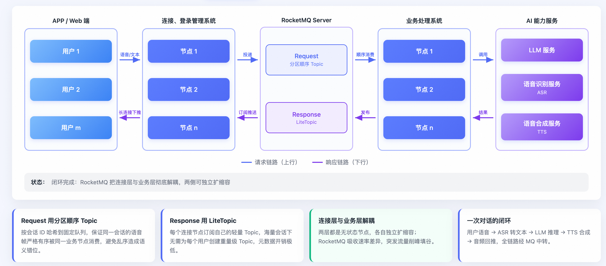
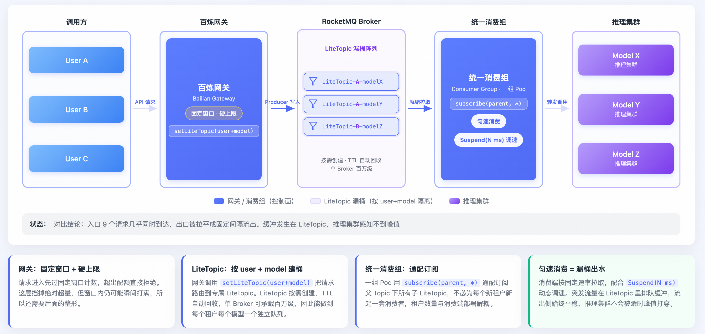
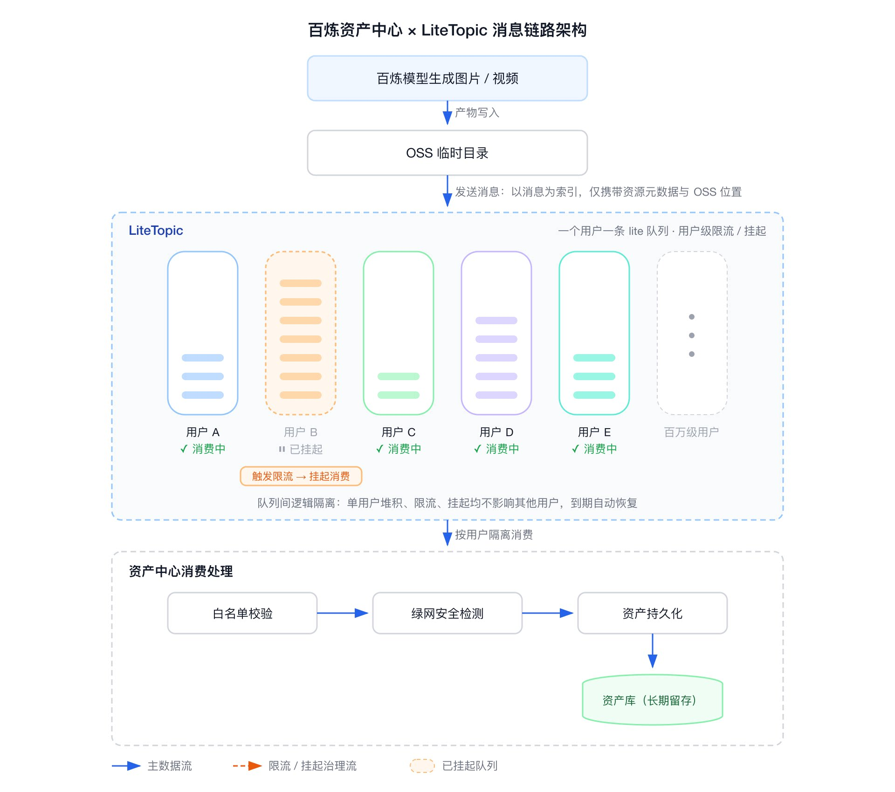
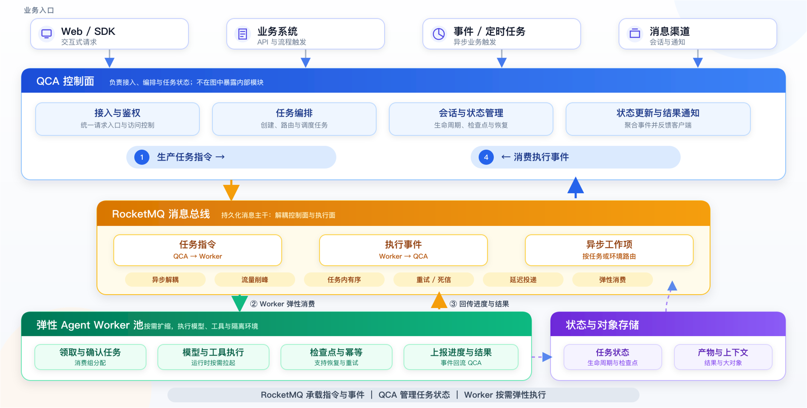

第 12 章 Agent 分布式通信¶
第 4 至第 6 章从任务、信息、行动三类工程契约说明了单个 Agent 如何工作：任务如何流转，上下文与状态如何表示，行动意图如何转化为受控的外部影响。这些契约都隐含了一个前提——参与执行的各方能够互相通达。当 Agent 从单进程走向分布式，这个前提本身成为需要设计的对象。
请求—响应、流式推送、消息队列和事件总线都可用于 Agent 系统。设计上的变化在于：同一任务可能包含耗时差异很大的步骤，跨越多次连接与多个实例，并经历较长的外部等待。因此，需要逐段检查调用时限、结果获取和恢复要求，再选择合适的通信方式。
因此，本章讨论的不是该用哪个中间件，而是通信语义的选择及其后果。全章围绕两个坐标展开：按通信双方的身份划分四个通信面，按时间与空间耦合度划分四档交互语义。二者交叉构成一张选型地图，用于回答某一段通信应当采用何种语义、状态应当寄存在何处、以及失效时会以什么方式失效。
本章重点讨论通信语义、消息交互和通信契约。Runtime 与 Sandbox 管理实例和执行环境，状态存储章讨论权威状态的持久化，异步任务章讨论队列、触发与工作流，网关章讨论入口策略，协作章讨论成员责任与成果接受。通信层为这些机制传递请求、事件和对象引用。
12.1 为什么 AI 原生应用需要重新设计通信¶
12.1.1 四个需要重新检查的假设¶
常见应用通过逐层调用、超时和重试组织服务通信。进入 Agent 场景后，这些机制仍然适用，但需要重新检查四项前提。
-
调用耗时是否有界。 一次工具查询可能很短，包含探索、外部处理和审批的任务则可能持续很久。超时需要针对具体调用设置，长任务不能只靠延长同一个 HTTP 请求来承载。
-
会话是否依赖当前连接。 一个会话可能跨多次连接存在，同一客户端也可能查询多个后台任务。会话与任务应有独立标识，连接只是当前的数据传输路径；节点更替后，需要重新定位任务和订阅位置。
-
等待期间占用哪些资源。 网络服务本来就可能包含大量 I/O 等待，Agent 又增加了模型调用与人工介入。异步 I/O 可以减少线程占用，持久化等待可以进一步释放执行资源，但连接、内存、保留环境与存储的成本仍需分别测量。
-
通信端点是否会变化。 实例扩缩容、故障接管和沙箱重建会改变物理地址。对要求持续执行的任务，通信契约需要把业务标识与物理端点分开，并定义重新寻址、查询和结果交付的方式。
12.1.2 一条主线：让必要状态独立于连接存在¶
本章沿着状态由谁保存、断连后如何继续这条主线比较通信机制。需要区分三类内容：业务任务状态、执行检查点，以及消息日志与消费位置。它们可以关联，也可以在同一基础设施上承载，但不能直接互相替代。
| 承载位置 | 常见内容 | 失效影响 | 恢复条件 |
|---|---|---|---|
| 连接与进程内存 | 当前响应、临时调用状态 | 断连或进程退出后，未持久化内容可能丢失 | 查询持久任务或重新发起允许重试的调用 |
| 外部状态存储 | 任务记录、检查点、结果引用 | 依赖存储可用性与提交一致性 | 按任务标识取得可信状态，按恢复契约继续 |
| 持久消息通道 | 消息、序号、确认位置 | 超出保留期或消费位置丢失会形成缺口 | 在保留范围内补读事件，按应用规则去重并更新状态 |
表 12-1 状态承载位置与恢复条件
外部状态存储与持久通道是可以组合的能力。任务表维护当前业务状态，通道保存交互事件；只有采用完整的事件溯源契约时，通道中的事件日志才可以成为重建业务状态的权威来源。消息重播不自动恢复进程，也不自动撤销或去重外部操作。
RocketMQ-A2A 的 FSE 2026 论文以会话级可重播事件流讨论大规模 Agent 通信。此类研究可用于比较连接内状态与持久化通道的故障表现，但压测结果应结合消息规模、并发、硬件和故障注入条件解释，不能直接推导协议本身的普遍性能上限。相关案例在后文按其通信机制展开。
12.2 通信范式参考模型¶
12.2.1 四个通信面¶
第一个坐标按通信双方的身份划分。这一轴决定契约由谁定义，以及某段通信的标准化程度。
MCP、A2A 和 AG-UI 分别提供工具与上下文接入、Agent 交互及用户界面事件等协议能力。本章在这三类关系之外加入服务端组件间通信，形成用于分析的四个通信面。这是本章的分类方式，不是行业标准分层。
四个通信面分别是人机面、能力面、协作面和内构面。协议只提供其中部分契约，具体的持久化、路由、授权和恢复仍需由实现补齐。
| 通信面 | 通信双方 | 对应协议层 | 常见机制 | 核心矛盾 |
|---|---|---|---|---|
| 人机面 | 用户或前端 与 Agent | AG-UI | 增量 token 流、前端流式协议、待办收件箱、人在回路审批 | 需要增量可见与随时打断，而前端连接最不可靠 |
| 能力面 | Agent 与 工具或数据 | MCP | 工具调用，垂直方向 | 工具耗时分化极大，毫秒级查询与分钟级任务共用一套协议 |
| 协作面 | Agent 与 Agent | A2A | 任务委派，水平方向 | 任务天然长跑，而点对点拓扑下两两集成与信任关系随 Agent 数量组合增长 |
| 内构面 | Agent 服务端组件之间 | 无标准协议 | 消息队列、事件流、内部 RPC | 海量会话通道的元数据成本与多租户隔离 |
表 12-2 四个通信面及其核心矛盾
增加内构面，是为了说明 Harness、执行端与状态服务之间的通信责任。这些内部链路可能采用 RPC、消息队列或事件流，需要根据实际负载设计。
12.2.2 四档交互语义¶
第二个坐标按时间与空间耦合度划分。这一轴决定失效模式是什么。
以下四档用于区分接口呈现和解耦程度，不是成熟度等级。一个系统可以同时使用多档语义；非阻塞编程接口、流式输出与业务任务异步执行也应分别判断。
| 档位 | 语义 | 时间耦合 | 空间耦合 | 状态位置 | 解决什么 | 不解决什么 |
|---|---|---|---|---|---|---|
| S1 请求—响应 | 一次请求取得结果 | 响应期内耦合 | 依赖可达端点 | 临时调用状态；可关联持久业务记录 | 短调用与直接反馈 | 不自带长任务查询与事件续传 |
| S2 请求域流式 | 一次请求中逐步返回事件 | 当前流依赖连接 | 依赖可达端点 | 当前流；也可关联持久任务 | 增量可见与进度反馈 | 单凭流不能保证断连后补齐 |
| S3 任务句柄 | 提交后凭标识查询或订阅 | 执行与首次请求解耦 | 依赖可查询任务入口 | 持久任务与结果引用 | 长任务查询、离线取回结果 | 不自动保证事件重播或业务恢复 |
| S4 持久通道 | 按通道订阅、确认和补读 | 生产与消费解耦 | 通过逻辑通道关联 | 消息日志与消费位置 | 推送、削峰、重播和通道治理 | 仍需应用状态、幂等与运维机制 |
表 12-3 四档交互语义谱系
12.2.3 请求域流式与任务异步的区别¶
token 流和 SSE 说明结果如何逐步到达，不直接说明任务是否独立于连接存在。一个流可以只是当前调用的输出，也可以订阅已经持久化的后台任务。断连是否导致执行取消、是否还能查询结果，应由服务契约明确，不能从传输形式推断。
因此需要分别检查两个条件：是否有独立于连接的任务句柄，以及是否有事件续传位置。前者支持稍后查询任务状态，后者支持补齐保留范围内的事件；有任务句柄不一定有完整事件重播，有事件序号也不自动保证业务状态可恢复。
MCP 2026-07-28 移除了传输层的 SSE 续传机制，断流后的新请求还需应用处理业务幂等。A2A 则允许流式更新关联持久 Task，并通过任务查询或重新订阅取得后续状态。两者都说明：流结束与业务任务结束是不同边界，代理和客户端需要按协议版本及端点能力处理。
12.2.4 两轴交叉：常见组合¶
| 通信面 | S1 | S2 | S3 | S4 |
|---|---|---|---|---|
| 人机面 | 表单式问答 | token 流、前端流式协议 | 收件箱与任务列表 | 多端接入同一会话 |
| 能力面 | 工具调用 | 秒级任务的请求内流式升级 | MCP Tasks 扩展 | 需要额外的持久通道契约 |
| 协作面 | 简单交互的同步返回 | A2A 流式消息 | A2A 任务加状态查询与推送通知 | 消息中间件承载的 Agent 网格 |
| 内构面 | 组件间内部 RPC | 服务端组件间流式转发 | 任务表加认领机制 | 会话级通道、事件流 |
表 12-4 四个通信面在四档语义上的当前分布
本表用于展示可以采用的组合，不代表市场占有率或必须遵循的默认实现。选择取决于任务时长、断连要求、端点能力及运维条件。
12.2.5 通信契约的六个要素¶
无论落在哪一档，一份可用于生产的 Agent 通信契约都需要回答六个问题。这六项既是设计检查表，也是判断某个协议"缺什么"的量规。
-
标识：会话、任务、轮次、消息各自的标识及其从属关系。将任务标识直接绑定为消息线程标识，会限制后台执行、多人协作与跨渠道续接，应分别保留并显式记录关联。
-
顺序：需要保序的作用域。保序范围通常可以限制在任务或会话内——在一个语音交互案例中，请求侧以会话标识作为分区键保证会话内有序，响应侧按会话隔离，二者都不承诺跨会话的全局顺序。
-
投递保证：至少一次、至多一次或恰好一次的选择，以及配套的去重键。同一系统内不同通道可以取不同强度。
-
续传点：断连或换节点后从何处继续。需要与任务查询能力分开声明。
-
生命周期：通道与任务的创建、过期与销毁规则。临时通道可以按需创建并设置保留期，回收前应核对活跃任务、未确认消息和必要的恢复窗口。
-
背压：过载时如何减速而不是崩溃。协议的错误与限流信号、客户端重试、网关准入和消息队列共同参与，需明确各层的流控与积压边界。
12.3 同步通信及其边界¶
请求—响应适合执行时间和故障处理路径明确的调用。本节保留作者对同步优势与边界的比较，并将判断落到具体链路：是否需要独立的任务句柄、是否需要补读事件，以及引入异步组件后能否覆盖相应成本。
12.3.1 四项难以替代的工程优势¶
控制路径直接。 请求—响应便于将输入、返回值与错误关联在一次调用中。跨进程调用仍可能超时、重复执行或返回结果未知，不能因采用同步接口就省略幂等和追踪。
进程内调用栈连续。 这里需要区分两类调试场景：单机进程内的同步调用，调用栈本身即是最完整的失败上下文；跨进程的同步调用同样会遇到分布式追踪问题，在这一层上并不比异步更容易调试。但在没有跨进程边界的调用段内，同步保留了一份异步方案需要额外基础设施（W3C Trace 贯通、跨组件 traceID 传播）才能重建的调试信息。
运维复杂度低。 不引入消息队列、事件流或任务表，也就没有保留策略、消费者组、DLQ、重投风暴等新的失效模式。
成本结构较简单。 短调用可以避免额外的消息驻留、保留与消费管理开销。是否占用线程取决于编程模型；实际等待成本还需结合连接、内存、并发与服务计费方式测量。
12.3.2 协议中的请求—响应路径¶
MCP 支持直接完成的工具调用，可选 Tasks 扩展提供长任务句柄。A2A 也允许简单交互直接返回 Message，或创建可继续查询的 Task；流式和推送按端点声明的能力使用。选择短调用还是后台任务，应结合接口契约与任务需要，而非只根据协议名称。
协议通常不会为所有业务定义统一的秒数阈值。网关超时、调用方等待预算、服务端执行能力和结果保留时间，需要在具体接入时约定。完整的 MCP 与 A2A 分工见后文能力面与协作面。
12.3.3 三项选择依据¶
选择请求—响应时，应检查执行时长、扩展需求和失败处理三项条件。
条件一：调用能否在约定时限内完成。 客户端、网关与服务端应协调连接、空闲和总截止时间。若任务包含不可预测的长时间等待，就需要独立的任务查询与恢复路径，不能只靠延长连接超时。
条件二：链路是否需要独立伸缩与削峰。 同步服务也可以独立扩容和设置熔断、限流；消息或任务队列进一步分离生产与消费速率，允许积压并按容量执行。是否值得引入，需要比较突发负载、等待时限和新增的存储、延迟及运维成本。
条件三：失败结果是否可确认。 同步接口也可以使用幂等键和状态查询，并非只能从头重跑。对写入、工单创建等操作，请求超时后需要核对结果；如果任务需要在离线后继续且稍后取回结果，则应暴露持久任务标识。异步化也不会消除外部副作用的确认责任。
短且可控的调用可以采用请求—响应；需要持续进度时增加流式输出；需要执行与连接解耦时增加任务句柄；需要消息补读、削峰和消费治理时再引入持久通道。只在实际需要的链路增加机制。
12.4 异步通信的三种形态¶
12.4.1 任务句柄¶
S3 通过稳定标识让调用方稍后查询任务状态和结果。结果的持久性、查询保留期以及执行故障后的恢复能力，需要由服务端分别承诺，不能仅凭返回 Task ID 推导。
协议层正在向这一档收敛。MCP 在 2025 年 11 月 25 日以实验性特性引入任务机制，在 2026 年 7 月 28 日转正为官方扩展，配套的变更通知从独立的 HTTP 端点改为单一订阅流，按通知类型显式启用。托管平台层同样以任务标识作为恢复凭据：某托管 Agent 服务的Harness设计为无状态，实例崩溃后由新实例凭会话标识唤醒并拉取事件历史续跑。
任务句柄可以配合轮询、回调或订阅。轮询适合接入简单、频率可控的场景；回调和订阅减少重复查询，但要处理通知丢失、认证与重试。结果查询应始终有明确的保留和授权规则。
12.4.2 事件驱动¶
事件驱动围绕已发生的状态变化触发后续处理，消息则是传递命令或事件的载体。事件驱动可以与事件溯源、读写分离等模式组合，但并不要求同时采用。引入消息中间件也不自动得到可重放审计或业务状态恢复。
将会话变化持久化为有序事件，有助于补读和追溯；若进一步以事件重建业务状态，还必须记录完整的状态变化、版本与外部结果。仅用于通知的队列可以继续与权威任务存储配合，无需承担全部业务状态。
12.4.3 持久通道¶
S4 提供持久消息、消费位置和通道级治理，可以与 S3 的任务模型组合。这里的恢复指补读消息，不等于业务执行自动恢复。其最小语义可以归纳为四条：
持久通道的四条最小语义
├── 命名通道 以业务标识（会话、用户、环境）直接命名持久消息通道，如Topic/Queue
├── 续传点 (通道, 序号) 构成可恢复位置，断连后从最后确认位置续接
├── 结果保留 通道内容在保留期内可重复读取，不因消费者离线而丢失
└── 未确认重投 按实现约定重投，消费者仍需幂等处理
以上是本章用于检查持久通道的能力清单。MCP 或 A2A 的核心接口不能替代这份通道契约；实际采用时应核验消息持久性、保留期、订阅、确认、重投和权限，不能从“使用了消息队列”推导全部能力。
12.4.4 异步架构代价清单¶
异步不是免费的。它一方面会增加调用链路的跳数，增加传输、持久化与排队延迟；另一个方面也会引入架构复杂度和运维复杂度，清单如下：
| 代价 | 具体表现 | 对应工程动作 |
|---|---|---|
| 每跳延迟 | 每跳增加的延迟取决于传输、持久化与排队情况 | 与端到端时延目标一起测量，特别关注实时交互 |
| 幂等要求 | 重投与重放要求步骤可安全重复执行 | 为每个步骤定义幂等键，恢复前核对外部系统状态 |
| 保留策略 | 大量会话保留时长过长，会消耗更多的存储空间和成本 | 基于容灾回溯和审计的需求设定合理保留时间 |
| 故障传播 | 无超时的编排边会放大失败 | 按调用或等待类型设置截止时间、重试上限和失败处理 |
| 可观测缺口 | 调用栈不再连续 | 全链路追踪加统一追踪关联 |
表 12-5 异步通信的代价与对应工程动作
12.5 能力面：Agent 与外部工具¶
12.5.1 传输层的四代演进¶
MCP 的传输演进展示了协议会话、请求元数据与业务状态之间的责任调整。下表只列出影响本章通信设计的变化，具体代理与授权校验见 AI Gateway 章。
| 版本 | 传输形态 | 状态位置 | 主要代价 |
|---|---|---|---|
| 2024-11-05 | JSON-RPC 2.0，stdio 与 HTTP 加事件流双端点 | 会话级常驻推送通道 | 需要管理服务端推送连接 |
| 2025-03-26 | Streamable HTTP 单端点 | 会话标识头，可选事件重放标识 | 负载均衡后需粘性会话或共享会话存储 |
| 2025-11-25 | 保留会话与握手 | 同上 | 首次引入实验性任务机制 |
| 2026-07-28 | 无状态核心 | 每请求元数据加应用层显式任务句柄 | 重放责任下沉应用层 |
表 12-6 MCP 四代传输的通信语义与状态位置
2025-11-25 首次引入实验性 Tasks，2026-07-28 将其移至官方可选扩展。核心传输与扩展任务分别协商和验证，不能把扩展能力视为所有 MCP 端点的默认保证。
12.5.2 无状态化的演进根因与反向调用的重构¶
2026-07-28 移除协议会话标识与初始化握手，使请求携带版本和能力元数据。此前依赖会话的实现可以通过亲和或共享状态扩展，但需要额外管理连接与会话；新机制减少了这部分协议约束，业务状态仍需显式组织。
新版采用逐请求元数据，并通过 server/discover 提供按需发现。无会话依赖的请求更容易分配到不同实例；能否直接使用轮询负载均衡，仍取决于工具的业务状态、资源归属和持久化契约。
反向调用采用多轮往返请求：服务端返回需要输入的结果，客户端携带相应输入再次请求。服务端变更通知则通过 subscriptions/listen 按类型订阅，不能将无状态核心解释为没有持续通知连接。Roots、Sampling 与 Logging 等能力进入弃用流程；具体兼容窗口按功能状态、SDK 与部署版本核验。
12.5.3 协议无状态不等于应用无状态¶
这是本节最容易被误读的一点。协议放弃承担状态，不意味着状态消失，而意味着状态责任转移到应用层的显式句柄，并由应用选择持久化后端。分钟级任务返回任务句柄后，任务状态存放在应用自选的后端服务中，不同实例凭句柄恢复。
企业仍需明确失败调用的重试、任务保留和结果获取规则。传输续传与应用恢复是两层责任：新版核心传输不提供原有 SSE 重播，重新提交调用时要处理幂等和未知结果；可选 Tasks 扩展则按其状态与保留契约获取结果。
12.6 协作面：Agent 与 Agent¶
12.6.1 异步优先与任务生命周期¶
A2A 的设计取向在规范的指导原则中直接给出：为可能非常长时间运行的任务与人在回路交互而设计。这一取向决定了协作面的核心工作单元不是一次性函数调用，而是有状态、可长跑的任务。
A2A 的任务模型包含已提交、执行中、需要输入、需要授权以及完成、失败、取消、拒绝等状态。简单交互也可以直接返回 Message 而不创建 Task；创建 Task 时，产物通过其 Artifact 关联。任务状态和结果的保留由服务端契约约束，不依赖当前输出连接。
12.6.2 两种异步机制及其分工¶
A2A 提供两种机制，分属不同档位，混用会导致恢复语义不明。
流式消息接口属于 S2：HTTP 响应体即事件流，作用域限于单次请求，流完即断。它适合任务执行期间的进度可见，不适合作为结果送达的唯一保证。
推送通知属于 S3 的通知增强：提交任务时携带回调配置，服务端在状态变化时回调。规范把推送载荷定义得与流式事件同构——可以是完整任务对象，也可以只是一条状态更新；而规范给出的客户端做法是收到通知后按任务标识调用查询，拉取完整结果。这意味着推送通知的角色是"去拉取"的触发器，结果的可寻址性仍由任务查询保证。
可按能力组合流式更新、推送与任务查询：流式用于当前过程可见，推送用于提醒变化，查询用于取得可访问的任务状态与结果。并非三者必须同时启用，例如轮询也可独立使用；关键是断连后仍有明确的结果获取路径。
12.6.3 为什么两个协议走向相反方向¶
MCP 削弱会话状态、A2A 强化任务生命周期，这一现象容易被解读为路线优劣之争。实际原因在通信形态本身。
MCP 以工具、资源和提示的访问为主要对象，协议会话收敛有利于请求在实例间分配；跨调用业务状态通过显式句柄或应用存储关联。
A2A 面向 Agent 之间的交接，以 Task、Message 和 Artifact 表达协作。长任务需要可查询的生命周期，通知与流式提供不同的更新路径。通信协议负责互操作，业务责任与最终验收仍由协作系统确定。
| 维度 | MCP | A2A |
|---|---|---|
| 方向 | 垂直，Agent 到工具与数据 | 水平，Agent 到 Agent |
| 架构 | 宿主-客户端-服务端 | 点对点 |
| 核心单元 | 工具调用，单次操作 | 任务，有状态工作流 |
| 能力发现 | 按需发现接口（2026-07-28 起） | Agent Card 预发布，支持签名 |
| 状态管理 | 无状态核心，状态上推应用层 | 完整任务生命周期状态机 |
| 传输绑定 | Streamable HTTP | JSON-RPC、gRPC、REST 三绑定 |
| 演进方向 | 削弱会话状态 | 强化任务 |
表 12-7 MCP 与 A2A 的定位对照
两者可以组合：编排 Agent 经 A2A 委派工作，专业 Agent 经 MCP 调用工具。选择取决于需要表达的是一次能力调用还是持续任务交接，不宜按“有状态”和“无状态”为整个应用划分路线。
12.7 内构面：会话通道与手脑分离¶
服务端内部通信需要处理两项选择：如何组织并发会话的消息，以及如何连接决策循环与工具执行。前者影响寻址和消费治理，后者影响资源伸缩与故障隔离。本节保留会话通道和决策、执行分离的案例，重点说明通信侧的责任。
12.7.1 会话通道：把会话状态放进通道¶
一种做法是为每个会话或任务提供独立的逻辑通道，按业务标识发送、订阅并记录消费位置。连接断开后能否补读，取决于保留期、订阅和确认契约；任务状态继续由相应存储或完整事件日志维护。
这一模式最可复用的一条设计判据是：通道键影响治理粒度。通道以什么业务标识命名，就决定了隔离、限流、观测与回收以什么粒度进行。两个公开案例给出了两种通道键。
以会话标识为通道键：请求保序加响应隔离。 在一个高并发智能语音交互场景中，链路贯穿客户端、网关、业务处理系统与模型、语音识别、语音合成等服务，其中客户端到网关、业务处理系统到模型之间均维持长连接。该场景的四个原生挑战是：全链路会话粘滞的精准路由（分布式环境下维护会话标识到物理节点的动态映射表本身复杂，节点扩容重启或网络波动时路由表同步延迟极易导致消息投递到错误节点）、模型异步结果的实时精准回推、海量临时通道的元数据爆炸、以及会话生命周期自动化管理的缺失。
方案将两侧分开处理：请求侧的分片音频包以会话标识为分区键写入分区顺序主题，保证同一会话内消息处理有序；响应侧直接以会话标识作为通道名，每个应用节点只订阅与本节点相关的通道集合，断连时动态删除订阅、新会话建立时动态新增、节点重启时续订以保障会话内容连续性。
该方案报告的三项收益，恰好对应 12.1.2 的主线：长耗时会话的连续性（在通道保留与任务有效期内，响应可路由到用户当前连接的网关节点）；应用架构进一步无状态化——路由逻辑下沉到消息中间件层，业务代码只需围绕会话标识发送和接收消息，应用节点更接近无状态计算单元，不再强依赖本地连接状态表；以及降低无效重试带来的令牌成本。
可观测性的做法值得单独记录，因为它是通道级治理的直接体现：按通道的消息堆积量阈值配置告警，触发后在控制台查看堆积量最高的通道列表及对应消费者地址，使故障定位从全局排查变为按通道定位。

以用户为通道键：通道即治理单元。 同一大模型服务平台在两个场景里给出了两种通道键，但共用一个思路——把通道键选在业务并发单元上，让通道天然成为治理单元。
场景一：网关限流。 阿里云百炼平台的网关承接百万级租户对数十种模型的调用，几十万"用户 × 模型"并发是日常态；后端 GPU 是硬上限、扩容周期长，因此限流不再是"拦不拦"的二元问题，而是"以什么节奏喂给后端"。若后端对突发敏感，需要限制令牌桶允许的突发量；进程内漏桶又会在突发时把几十万请求灌进网关 JVM 直至内存溢出。方案的关键动作是把漏桶从进程内搬到进程外：网关只用固定窗口做粗粒度上限并把请求写入消息通道，通道键取"用户 × 模型"的组合，使每个客户在每个模型上拥有独立的限流通道；消费侧以通配符订阅父主题，命中限流时消费回调返回挂起指令，服务端仅暂停该通道的投递并在到期后自动恢复。整条链路可归纳为"网关管硬上限、通道阵列管节奏、挂起指令做细粒度调速"。

场景二：资产中心。 在阿里云百炼资产中心中，用户生成的图片、视频默认落对象存储的临时目录、到期清理，资产中心负责持久保存与素材复用，链路含白名单校验、内容安全检测、落库。业务并发单元天然是"用户"：单一用户短时间批量生成会形成突发，其他用户不应被牵连。方案是消息只带元数据与对象存储索引，不传文件本体，通道键取"用户"，通道按需创建、按存活时间自动回收；同一父主题下的消费组以通配符订阅所有用户通道，单用户的堆积或异常只影响该用户自己的通道，不阻塞他人。

两个场景说明通道可以按用户或会话承载限流、订阅和暂停。共享队列也能通过分区、公平调度或应用配额处理隔离，但需要额外机制。比较时应验证活跃通道数、每通道积压、消费公平性和管理成本，而不是由队列名称直接推导隔离能力。
12.7.2 决策与执行分离（手脑分离）¶
内构面的第二项结构性选择是把决策循环与工具执行拆到不同进程，以会话通道相连。
决策与执行的资源需求可能不同：决策循环需要访问任务状态并等待模型，工具执行可能需要突发计算或更强隔离。分离部署允许分别伸缩，但工具不一定无状态，决策进程也不必一直常驻，双方都需说明恢复和资源释放条件。
多个独立实现收敛到这一结构，且分离的彻底程度不同。
Anthropic Managed Agents 给出的是理念与分层层面的答案，其工程文章直接把这件事命名为"把大脑与双手解耦"（Decoupling the brain from the hands）。出发点是 harness 老化：harness 里编码的是对当前模型局限的假设，模型一升级，这些假设就从优化变成负担——文章举的例子是为某一代模型的"上下文焦虑"加的上下文重置机制，在下一代模型上该行为消失后，这段逻辑就成了多余负重。类比操作系统用进程与文件两个抽象承载尚未被设想的程序，它把 Agent 虚拟化为三个抽象：会话是追加式事件日志，记录发生过的一切；Harness是调用模型、路由工具调用的那个循环；沙箱是跑代码、改文件的执行环境。
三者解耦后的通信契约可以概括为三条。第一，沙箱降级为一件普通工具：在统一的执行接口之下，容器、MCP 服务与自有工具没有区别，因此沙箱在这套设计里被建模为一只"手"，它的失败表现为工具层错误而不是会话中断，需要新环境时按需申请。第二，Harness无状态：新实例凭会话标识唤醒、拉取事件历史续跑，运行期产生的事实以事件写回会话，因此实例可以随时被替换。第三，会话不等于模型的上下文窗口——压缩与裁剪是对"丢什么"的不可逆决策，所以日志侧完整保留，取用与变换留给Harness按需处理。由此得到的扩展方向被称为"多大脑、多双手"：大脑可以水平扩展、也可以部署进客户自己的网络，双手则可以在大脑之间传递。Anthropic 把这套东西自称为"meta-harness"：对具体用哪种 harness 不持立场，只对抽象边界与接口主张。也正因为如此，它公开的是分层原则与收益，而没有公开通道级的实现细节——这一层的具体做法，可以看下面的案例。
Qoder Cloud Agent 则把同一理念落到通道层，给出了更详尽的实现参考，其设计以“手脑分离”为核心理念：决策侧（该产品称 Agent Runtime）负责决策循环与状态推进，执行面（Sandbox Worker）负责按需计算，中间以 RocketMQ 消息总线承载异步交接。架构被显式拆为四个层次（更详细的内容可以参考 极客时间公开课，Qoder Cloud Agent的工程实践）：
| 层 | 角色 | 职责 |
|---|---|---|
| 脑—Agent Runtime | 决策与推进 | 决定任务接下来做什么；维护 Session 状态与推进逻辑；支持多 Agent 与插话 |
| 路—MQ | 异步交接 | 保序投递；Session 内有序、Session 间并行；承担等待与背压 |
| 手—Sandbox Worker | 按需计算 | 把当前这一步算出来；完成即释放；空闲 Worker 随时接手 |
| 底—Session State | 持久化事实 | 留下接单和结果事实；支撑挂起、恢复与重放 |
表 12-8 Qoder Cloud Agent 的手脑分离架构层次
决策侧与执行侧之间由 RocketMQ 解耦，消息总线承载三类信息：任务指令（QCA 到 Worker，异步解耦、流量削峰）、执行事件（Worker 到 QCA，任务内有序、支持重试与死信、延迟投递）、异步工作项（按任务或环境路由、弹性消费）。其中 RocketMQ 提供了会话级通道：通道以 Session 标识命名，同一 Session 内有序、跨 Session 并行，形成隔离的执行车道；Worker 作为 Session通道消费者，实时认领任务，执行模型调用、MCP工具、沙箱执行等，具备按需弹性伸缩的能力。多个复杂场景在该架构上得到统一处理——多 Agent 以 Topic=session_id 下发、CAW Claim 后并行执行、CAS 以 Mailbox 和 Barrier 汇聚结果；Webhook 以 Topic=endpoint_id 保证同一客户顺序投递；挂起与恢复则将等待状态持久化后释放 Worker，事件返回后由任意 Worker 接续。

这一案例说明同一系统内可以在会话通道之上承载多条语义不同的信息流，各自对应不同的投递保证与顺序要求——指令需要削峰与异步解耦，事件需要保序与重试，工作项需要按路由弹性消费——而不必将所有内部通信统一为一种语义。该架构的总结是"会话常驻、计算流动、状态可续"：任务不属于某台机器，机器只负责当前这一棒。
决策与执行分离后，需要明确工具调用标识、接收确认、进度与结果、取消及未知状态。执行端失联时，决策侧可查询持久记录并按恢复契约处理；只有保存了必要工作区与操作事实后，执行实例才可以安全替换。第7章说明环境恢复，本节关注交接消息与结果如何保持关联。
至此三个案例可以横向对照，差异集中在通道键的选择上——而通道键影响治理粒度。
| 案例 | 通道键 | 顺序保证 | 治理粒度 | 主要解决 |
|---|---|---|---|---|
| 智能语音交互 | 会话标识 | 请求侧会话内保序 | 会话 | 会话粘滞与异步结果回推 |
| 模型网关限流与资产中心 | 用户与模型的组合、或用户 | 不要求 | 用户或用户与模型 | 精细化限流与用户级治理 |
| Qoder Cloud Agent | 会话标识与环境标识 | 任务内有序与会话级保序 | 会话与环境 | 控制面与执行面的手脑分离与异步交接 |
表 12-9 三个案例的通道键与治理粒度对照
12.7.3 规模化的代价：当会话数压垮常规消息队列¶
前两节都默认"一会话一通道"足够便宜。当同时存活的会话进入万级、十万级，这个假设失效——若用常规消息队列为每个会话建一个标准主题，通道本身的元数据会先于业务压垮控制面。
下表列出三类方案在较大规模下可能遇到的瓶颈。具体上限取决于实现版本、资源配置与访问模式。
| 方案 | 失效点 |
|---|---|
| 每会话一个标准主题 | 大量主题可能增加元数据、路由同步和创建回收成本，应压测主题数量、活跃比例和控制面更新速率，不能以单组实验作为所有消息系统的上限。 |
| 广播消息 | 消息在所有节点重复投递与过滤，产生大量无效流量；所有节点需接收全量消息，从中取自己关注的Session消息。单节点处理能力成为整体容量上限，水平扩展受限 |
| 每 Session 实例独立消费组 | 消费组数量爆炸；动态过滤需外部协调，等于在消息系统之外重建一套路由 |
表 12-10 海量会话通道的三种直觉方案及其失效点
除通道本身，还有一个与之并列的反模式：将会话与常驻工作进程一对一绑死。这样做使整条任务时间线持续占用计算与内存资源，断线带来上下文丢失风险，扩容迁移困难。一份实践材料把这一状态描述为把工作进程"当成了宠物"——它有名字、有状态、不能替换。
要在这种规模下仍然维持"一会话一通道"，可以采用轻量通道或等效的逻辑通道复用技术，例如 Apache RocketMQ 的 LiteTopic（轻量主题），以上Qoder Cloud Agent使用的Session通道便是使用了RocketMQ的LiteTopic，支撑海量的Session as Topic语义。其核心技术原理是避免为每个逻辑通道维护完整的标准主题资源：通道在运行时按业务标识声明并挂载到少量预置的父主题之下，在服务端内存中仅表现为字符串键，物理消息共享父主题存储，同时维护轻量索引和必要的订阅、消费状态。
| 机制 | 解决的问题 |
|---|---|
| 首次发送自动创建，无需预先声明 | 临时会话的通道创建成本 |
| 双向索引（客户端到通道、通道到客户端） | 精准点对点投递，无需应用维护路由表 |
| 就绪集合，由写入、确认与解锁事件填充，公平排空 | 调度复杂度从订阅总数降到活跃数，并防止饥饿 |
| 空闲存活时间自动回收 | 会话生命周期的自动化管理 |
| 单通道挂起并立即释放线程 | 单通道限流不牵连其他通道 |
| 两种消费模式：通配符订阅与显式订阅 | 分别适配"消费全部相关通道"与"精确控制订阅集合" |
表 12-11 轻量通道技术的机制与对应问题
上述案例采用轻量通道承载会话语义。其他实现也可通过共享分区、索引和订阅管理达到类似目标；验收应关注持久性、保序、隔离、恢复与规模成本，而不限定为某一种产品机制。
12.8 人机面：用户与 Agent¶
人机面的特征是需求与可靠性倒挂：这一面对增量可见性与打断能力的要求最高，而前端连接容易因网络切换或客户端退出而中断。
因此人机面的通信契约不应把前端连接当作任务边界。可行的结构是：任务在服务端独立存在，前端连接只是当前的一个观察视图；连接断开只影响可见性，不影响任务推进；重连后通过续传点补齐遗漏事件。这一结构已有公开产品落地：Claude Code 的 Remote Control 允许手机、平板或浏览器接入终端中正在运行的同一个会话——多个客户端看到同一份会话视图，断开客户端只是关闭观察窗口、会话本身继续执行；其文档对这一分工的表述是 "a client for Claude Code sessions rather than a place where code runs"（此实现依赖 Anthropic 自有的前端协议，并非本节讨论的 AG-UI 提供的语义）。
人在回路的交互需要区分两类。执行期间的引导可以走请求域流式，因为它只在会话活跃时有意义。而阻塞式审批必须走持久化机制，因为等待人工响应的时间跨度不可预测——某云平台以待办收件箱承载这类交互，按"需要输入""错误""已完成"三类组织。
AG-UI 将用户界面与 Agent 的交互表达为事件，包括文本、工具调用与状态同步。其事件模型和扩展仍在演进，采用时应固定规范及 SDK 版本，并区分已实现能力与草案。这里重点讨论状态同步、人工输入与断连后的恢复职责。
状态快照和增量事件可以帮助前端重建当前视图，人工输入则需要与相应的任务和等待条件关联。前端持有的副本不因此成为任务权威状态；是否持久化、如何鉴权以及输入到达后如何继续，仍由服务端实现。
事件格式、运行中断与消息续传是不同能力。不能仅因支持状态快照或人工输入，就认为断连后能无缺口地重播所有事件。需要精确补读时，应额外约定事件标识、保留窗口和重复处理；只需要恢复当前视图时，也可以重新获取状态与消息快照。具体行为应以所采用版本和端点契约为准。
12.9 选型决策¶
12.9.1 默认选择与升级判据¶
选型的起点是为每个通信面选择成本与风险可接受的最低充分语义，而不是统一采用最高档位。
| 通信面 | 默认语义 | 升级触发条件 |
|---|---|---|
| 人机面 | S2 请求域流式 | 存在阻塞式人工审批，或需要跨设备、跨会话续看进度时升至 S3 或 S4 |
| 能力面 | S1 请求—响应 | 单个工具耗时超过网关超时，或需要跨实例恢复时升至 S3 |
| 协作面 | 持续交接采用 S3，简单交互可采用 S1 | 需要消息补读、扇出和独立消费治理时组合 S4 |
| 内构面 | 按组件职责选择 S1 或 S3 | 需要削峰、消费位置和通道治理时组合 S4，并验证规模成本 |
表 12-12 四个通信面的默认语义与升级触发条件
12.10 本章小结¶
通信设计需要让业务标识、必要状态和结果获取独立于当前连接与执行实例。任务状态、检查点、消息日志和消费位置各有职责，协议无状态不等于业务无状态，流式输出也不直接决定任务是否可以离线运行。
本章保留四个通信面与四档交互语义的分析方法。人机面重视过程可见和输入关联，能力面重视调用契约，协作面重视任务交接，内构面重视组件间的消息、路由与伸缩。请求—响应、流式、任务句柄和持久通道可以按链路组合，不构成必须逐级升级的路线。
每段通信应明确标识、顺序、投递与去重、结果查询或续传、生命周期和背压。采用持久通道时还需验证保留与恢复窗口，采用任务句柄时需明确结果保存和查询权限。通信层据此为 Runtime、存储、网关、异步任务和团队协作提供可验证的连接契约。